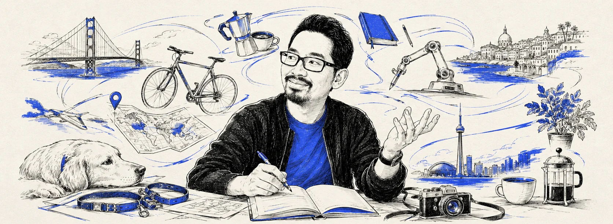

steveux.
presents · eleven years · in order of appearance
A film about
Making complex software feel intuitive
Starring

Written, designed & argued by
Steven Long Tran
Production credits
AI pair·Claude (taste-file supervised)
Cinematography·21 illustrations, one blue
Locations·San Francisco · Medellín
Best boy·A golden retriever
Stunts·Performed by working prototypes. No modals were harmed.
The sequel is greenlit
hello@steveux.com
← watch the full feature